ви і ваш транспортний засіб
У розділі 1, ви за кермом, ви дізналися, наскільки важливо робити правильний вибір під час водіння. Також важливо навчитися, як працює ваш транспортний засіб. Опанування органів керування — один із перших кроків до безпечного водіння.
Налаштуйте для безпеки
Щоб керувати безпечно, ви повинні зручно дотягатися до органів керування транспортного засобу й добре бачити все навколо. Перед тим як запустити двигун, завжди налаштуйте сидіння, підголівник і дзеркала. Ніколи не регулюйте сидіння чи рульове колесо, коли транспортний засіб рухається.
Сидіння
Сидіння має бути у вертикальному положенні, щоб ви могли:
- притиснути поясницю до спинки сидіння
- сидіти прямо, ніколи з відкинутою спинкою
- правою ногою дотягтися до підлоги за педаллю гальма, залишаючи ногу трохи зігнутою
- повертати рульове колесо, тримаючи руки трохи зігнутими
- дотягатися до всіх органів керування
- зручно тримати ліву ногу на місці ліворуч від педалі гальма або педалі зчеплення.
Також ви повинні бути на відстані не менше ніж 25 см (10 дюймів) від подушки безпеки водія.
Підголівники
Підголівники допомагають запобігти травмам м’яких тканин, як-от хлистовій травмі. Хлистова травма — це пошкодження шиї, голови та/або плечей після різкого ривкового руху. Налаштуйте підголівник так, щоб його верх був щонайменше на рівні верхівки вашої голови. Розташуйте підголівник якомога ближче до потилиці. Для цього може знадобитися змінити положення спинки сидіння. Підголівник, розташований ближче, може бути вдвічі ефективнішим у запобіганні травмам, ніж відсунутий занадто далеко назад.
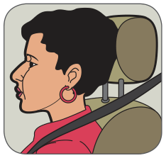
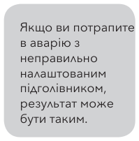
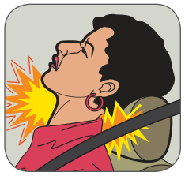
Паски безпеки
Є дві важливі причини пристібати пасок безпеки:
- Пасок безпеки значно зменшує ймовірність серйозної травми або смерті в аварії.
- Це вимога закону в B.C. — за непристебнутий пасок безпеки вас можуть оштрафувати.
Як водій ви також відповідаєте за те, щоб усі пасажири були належно закріплені пасками безпеки або дитячими системами безпеки.
Навіть на низькій швидкості аварія створює тиск у сотні кілограмів на ваше тіло. Якщо ви пристебнуті, особливо паском із поясною та плечовою частинами, ви значно менше ризикуєте отримати травму, втратити свідомість або бути викинутим із транспортного засобу. Навіть якщо транспортний засіб загориться або опиниться у воді, у вас більше шансів швидко вибратися, якщо ви залишитеся у свідомості.
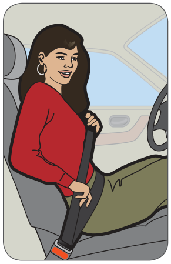
Якщо ваш транспортний засіб перевернеться або якщо вас викине з нього, ви, найімовірніше, отримаєте серйозні травми або загинете. Пристебнутий пасок безпеки допомагає запобігти тому, що вас викине з транспортного засобу. Він також допомагає зберігати контроль над транспортним засобом, підтримуючи вас за кермом.
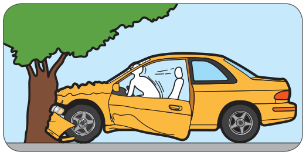
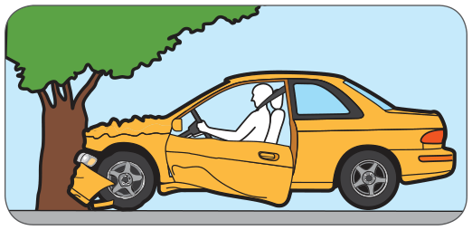
Пристібайте пасок безпеки навіть у короткі поїздки, адже більшість травм і смертей трапляється неподалік від дому.
Дитячі системи безпеки
Щороку в B.C. в аваріях з транспортними засобами в середньому травмуються 1 300 дітей до дев’яти років, а троє гинуть. Кожного разу, коли дитина їде пасажиром у транспортному засобі, вона наражається на ризик потрапити в зіткнення.
Правильне використання дитячого автокрісла, схваленого за Canadian Motor Vehicle Safety Standards (CMVSS — канадські стандарти безпеки транспортних засобів), забезпечить надійне закріплення дитини й значно зменшить ризик серйозної травми або смерті в аварії. Ви як водій відповідаєте за те, щоб усі ваші пасажири були належно закріплені пасками безпеки або дитячими системами безпеки.
етап 1 — обличчям назад
- Від народження і щонайменше до одного року та 9 кг (20 фунтів).
- Установлюйте на задньому сидінні.
- Розташовуйте посередині заднього сидіння.
- Обличчям назад якомога довше.
- НЕ на передньому сидінні з активною подушкою безпеки.
етап 2 — обличчям уперед із фіксувальним ременем
- Дитина має бути старшою за один рік і важчою за 9 кг (20 фунтів).
- Використовувати щонайменше до 18 кг (40 фунтів).
- Установлюйте на задньому сидінні.
- Може залишатися обличчям назад, якщо це допускають обмеження за вагою, встановлені виробником.
- Завжди використовуйте разом із фіксувальним ременем.
етап 3 — бустер
- Бустери забезпечують правильне прилягання паска безпеки. Вони піднімають дитину так, щоб пасок безпеки для дорослих проходив по кістках грудної клітки й таза. Найбезпечніше, коли дитина залишається в бустері, доки не досягне 145 см (4’9”).
- Дитина має важити понад 18 кг (40 фунтів).
- Обов’язковий щонайменше до дев’яти років або до 145 см (4’9”), залежно від того, що настане раніше.
- Установлюйте на задньому сидінні.
- Бустер використовують із поясно-плечовим паском безпеки.
- Розташуйте поясний пасок низько на стегнових кістках, а плечовий — через плече та перед грудьми.
- Не використовуйте бустер лише з поясним паском.
етап 4 — лише пасок безпеки
- Рекомендується перевозити дітей на задньому сидінні до 12 років.
- Поясний пасок має проходити низько по кістках таза.
- Плечовий пасок має проходити через плече і щільно прилягати до грудей.
- Ніколи не пропускайте плечовий пасок під рукою або за спиною. Це може призвести до серйозної травми в разі аварії.
- Тримайте спинку сидіння у вертикальному положенні, не відкинутою. Паски безпеки розраховані на вертикальну посадку. Сильно відкинуте сидіння може призвести до того, що пасажир вислизне з-під паска безпеки в разі аварії.
Примітка: Можна перевищувати вимоги закону, якщо це відповідає максимальним характеристикам зросту/ваги, які встановив виробник крісла.
Докладніше про дитячі системи безпеки — телефонуйте безкоштовно на Child Seat Information line: 1-877-247-5551 або дивіться www.childseatinfo.ca.
Подушки безпеки
Усі нові транспортні засоби оснащені подушками безпеки. Доведено, що вони зменшують кількість травм і смертей у зіткненнях. Подушка безпеки надувається, а потім випускає повітря, щоб зменшити силу удару під час зіткнення. І робить це дуже швидко — менш ніж за час одного кліпання ока подушка безпеки надувається, а потім починає здуватися.
Подушки безпеки можуть бути встановлені перед водієм і переднім пасажиром та збоку від них. Якщо ваш транспортний засіб оснащений подушками безпеки, розташуйте сидіння так, щоб відстань до рульового колеса була не менше 25 см (10 дюймів).
Це дає місце для надування подушки безпеки й захищає вас від додаткових травм.
Ознайомтеся із заходами безпеки в посібнику з експлуатації.
В окремих випадках подушку безпеки потрібно деактивувати. Для цього ви повинні звернутися до Transport Canada. Докладніше — телефонуйте за номером 1-800-333-0371.
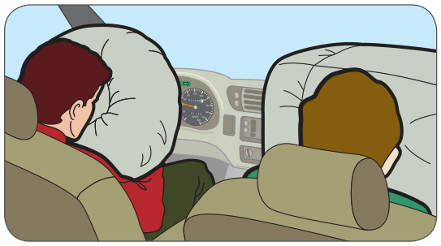
Дзеркала
Під час водіння ви маєте бачити все навколо транспортного засобу:
- Налаштуйте дзеркало заднього огляду так, щоб бачити позаду себе якнайбільше.
- Налаштуйте бічні дзеркала так, щоб якнайбільше зменшити сліпі зони. (Сліпі зони — це ділянки збоку від транспортного засобу, яких не видно в дзеркалах.) Зазвичай це означає, що видно лише невелику частину боку вашого транспортного засобу. Докладніше про сліпі зони див. у розділі 5, дивись – думай – дій.
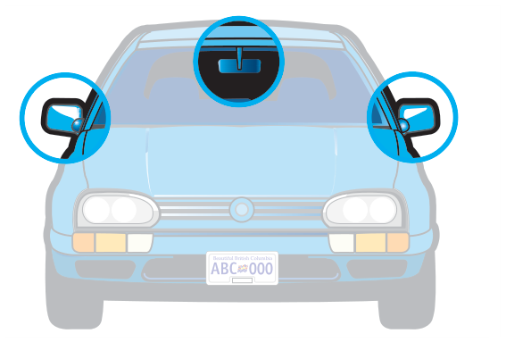
Ручні органи керування
Тепер, коли транспортний засіб налаштований під вас, подумайте про всі органи керування, якими ви керуєте руками. Дізнайтеся, як працює кожен із них, перш ніж спробувати їхати. Навіть коли ви досвідчений водій, вам потрібно буде звикати до цих органів керування щоразу, коли ви керуєте іншим транспортним засобом.
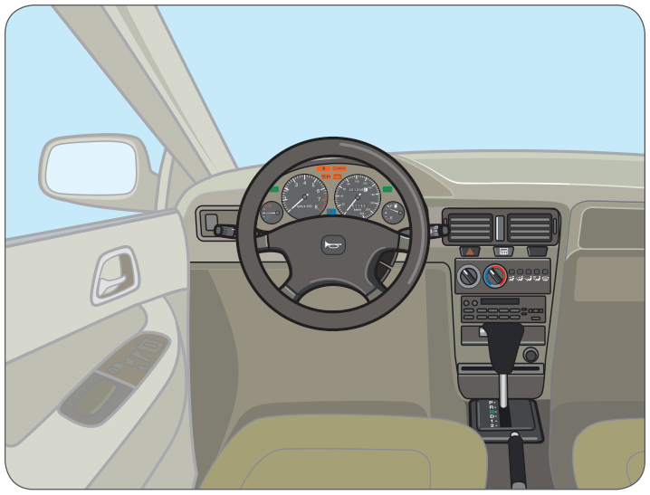
Рульове колесо
Рульове колесо керує напрямком руху транспортного засобу, повертаючи передні колеса. Якщо ваше рульове колесо регулюється, переконайтеся, що воно в правильному для вас положенні, перш ніж ви почнете їхати.
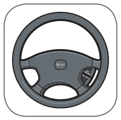
Замок запалювання
Вивчіть усі положення замка запалювання у вашому транспортному засобі. Серед них можуть бути:
- Lock — рульове керування заблоковано, запалювання вимкнено
- Off — запалювання вимкнено, але рульове керування не заблоковано
- Acc — запалювання вимкнено, але можна користуватися деякими електричними приладами (наприклад, радіо)
- On — запалювання ввімкнено
- Start — поверніть у це положення, щоб запустити двигун, потім відпустіть ключ, щоб він повернувся в положення On.
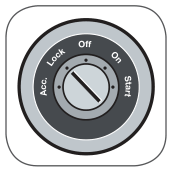
Важіль перемикання передач
Важіль перемикання передач дає змогу керувати коробкою передач транспортного засобу. Є два типи коробок передач: автоматична та механічна. Обидві керують з’єднанням двигуна з колесами.
Автоматична коробка передач сама вибирає найефективнішу передачу. У транспортному засобі з механічною коробкою передач передачу вибирає водій. Правильно вибрана передача не дає двигуну глохнути й дає йому працювати якомога економніше щодо витрати пального.
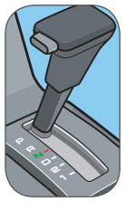
Механічна коробка передач завжди працює зі зчепленням. Важіль перемикання передач установлений на підлозі або на рульовій колонці. Механічні коробки передач бувають три-, чотири-, п’яти- або шестишвидкісні. Коли вчитеся користуватися важелем перемикання передач вашого транспортного засобу, звіряйтеся з посібником з експлуатації.
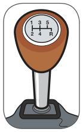
Порівняння автоматичної та механічної коробок передач
| Передача | Автоматична* | Механічна* |
|---|---|---|
| P – Park (стоянка) | Для запуску транспортного засобу та для стоянки. Блокує коробку передач. | |
| R – Reverse (задній хід) | Для руху назад. Вмикає ліхтарі заднього ходу (білі). | Для руху назад. Вмикає ліхтарі заднього ходу (білі). |
| N – Neutral (нейтральна) | Щоб перезапустити двигун, якщо він глохне під час руху. | Коли транспортний засіб стоїть або коли запускаєте двигун. |
| D – Drive (рух) | Для звичайного руху вперед. | |
| 1 – перша передача | Коли буксируєте важкий вантаж або їдете вгору чи вниз дуже крутими схилами. | Найнижча передача. З місця до швидкості 10 – 15 км/год. Коли буксируєте важкий вантаж або їдете вгору чи вниз дуже крутими схилами. |
| 2 – друга передача | Коли буксируєте важкий вантаж або їдете вгору чи вниз дуже крутими схилами. | На швидкості 15 – 30 км/год, на схилах і коли їдете по снігу чи льоду. |
| 3 – третя передача | На швидкості 30 – 60 км/год. | |
| 4 – четверта передача | На швидкостях шосе в 4-швидкісних моделях. | |
| 5 – п’ята передача | Для руху шосе в 5-швидкісних моделях. | |
| 6 – шоста передача | Для руху шосе в 6-швидкісних моделях. | |
| O – Overdrive (овердрайв) | На швидкості понад 40 км/год, щоб економити пальне. |
* Наведені швидкості приблизні й залежать від вашого транспортного засобу.
Стоянкове гальмо
Це гальмо не дає транспортному засобу рухатися, коли він припаркований. Залежно від транспортного засобу воно може бути ножним або ручним. Обов’язково повністю затягуйте стоянкове гальмо під час паркування і повністю відпускайте його перед рухом.
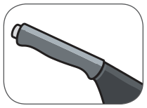
Стоянкове гальмо іноді називають аварійним гальмом, бо ним можна пригальмувати транспортний засіб, якщо ножне гальмо відмовить. Докладніше про такі ситуації див. розділ 8, стратегії в надзвичайних ситуаціях.
Важіль указівників повороту
Цей важіль вмикає й вимикає указівники повороту ліворуч і праворуч. Указівниками повороту ви повідомляєте інших учасників дорожнього руху, що хочете змінити напрямок або положення.
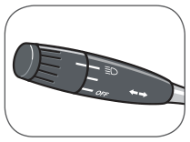
Освітлення
Перше положення вимикача освітлення керує задніми габаритними ліхтарями, стоянковими ліхтарями та боковими габаритними ліхтарями, а також підсвіткою передньої панелі й номерного знака. Друге положення керує фарами.
У вашому транспортному засобі є ще одне положення вимикача або окремий вимикач, який керує двома рівнями яскравості фар — ближнім і дальнім світлом. Використовуйте дальнє світло лише на неосвітлених дорогах уночі, коли назустріч не їдуть транспортні засоби і жодного немає перед вами.
Використовуйте стоянкові ліхтарі, коли стоїте й хочете, щоб ваш транспортний засіб було видно. Не вмикайте їх під час руху — замість них увімкніть фари.
Транспортні засоби, виготовлені після 1991 року, мають автоматичні денні ходові вогні (DRL) — засіб безпеки, який робить ваш транспортний засіб помітнішим для інших водіїв у світлу пору дня. Денні ходові вогні не вмикають задніх габаритних ліхтарів. Не використовуйте їх для водіння вночі чи в умовах поганої видимості. Використовуйте ближнє або дальнє світло.
Вимикач аварійної сигналізації
Вимикач аварійної сигналізації вмикає обидва указівники повороту одночасно. Ці блимаючі вогні повідомляють іншим учасникам дорожнього руху бути обережними біля вашого транспортного засобу, бо ви могли зупинитися через надзвичайну ситуацію.
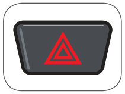
Круїз-контроль
Круїз-контроль дає змогу заздалегідь задати швидкість, яка залишатиметься незмінною. Використовуйте його лише в ідеальних умовах руху шосе. Ніколи не використовуйте круїз-контроль:
- на мокрому, слизькому, засніженому чи вкритому льодом покритті
- у міському потоці
- коли ви втомлені
- на звивистих дорогах.
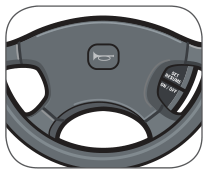
Склоочищувачі та склоомивач
Потренуйтеся знаходити різні режими швидкості склоочищувачів. Переконайтеся, що знаєте, як увімкнути склоомивач. Склоочищувачі завжди мають бути у відмінному робочому стані, щоб забезпечувати вам чіткий огляд під час дощу та снігу.
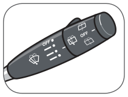
Звуковий сигнал
Звуковий сигнал — важливий спосіб передавати попередження іншим учасникам дорожнього руху. Обов’язково використовуйте його розсудливо.
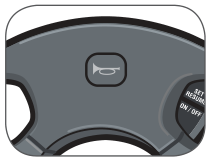
Органи керування обігрівачем, обдувом скла та кондиціонером
Панель важелів, які керують обдувом скла, надходженням повітря та кондиціонером, розташована в межах легкої досяжності водія. Прочитайте посібник з експлуатації, щоб дізнатися, як вони працюють. Потренуйтеся з ними, щоб ви могли легко ввімкнути обдув скла, не дивлячись на органи керування.
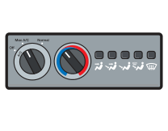
Педалі
Ногами ви будете керувати двома або трьома органами керування, залежно від того, чи має ваш транспортний засіб автоматичну чи механічну коробку передач.
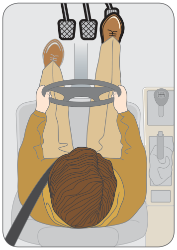
Акселератор
Акселератор керує кількістю пального, що надходить до двигуна. Чим більше пального отримує двигун, тим швидше рухається транспортний засіб. Вам потрібно навчитися натискати педаль із потрібною силою, щоб ви контролювали швидкість і розгін вашого транспортного засобу. Завжди керуйте акселератором правою ногою.
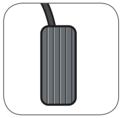
Гальмо
Педаль гальма розташована ліворуч від акселератора й використовується, щоб уповільнити та зупинити транспортний засіб. Завжди натискайте гальмо правою ногою. Вам потрібно навчитися натискати гальмо з потрібною силою, щоб ви могли зупиняти транспортний засіб плавно й точно.
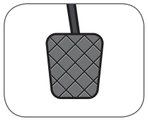
Знайте гальмівну систему свого транспортного засобу. Гальма з підсилювачем потребують меншої сили натискання, ніж звичайні гальма.
Антиблокувальна система гальм
Більшість транспортних засобів мають антиблокувальну систему гальм (ABS). Шукайте індикатор на передній панелі. Ця електронна система не дає колесам блокуватися.
Транспортні засоби з антиблокувальними системами гальм також мають звичайні гальмівні системи. Антиблокувальна система гальм активується лише тоді, коли ви сильно натискаєте на педаль гальма — наприклад, під час екстреної зупинки. Прочитайте посібник з експлуатації, щоб дізнатися більше про антиблокувальну систему гальм вашого транспортного засобу та про те, як правильно нею користуватися. Також див. розділ 8, стратегії в надзвичайних ситуаціях, щоб дізнатися більше про гальмування з ABS.
Якщо індикатор ABS не гасне після запуску транспортного засобу, система може бути несправною. Відвезіть його на ремонт.
Зчеплення
У транспортному засобі з механічною коробкою передач натискання педалі зчеплення від’єднує двигун від коробки передач, щоб ви могли перемикати передачі. Педаль натискайте лівою ногою, коли перемикаєте передачі. Не тримайте педаль зчеплення натиснутою наполовину («їхати на зчепленні»), коли транспортний засіб рухається, бо це спричиняє надмірне зношення.
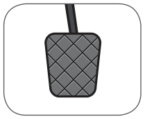
Коли починаєте рух після зупинки, відпускайте зчеплення повільно й плавно, щоб автомобіль не заглох. Коли зупиняєтеся, спочатку гальмуйте, а зчеплення натискайте безпосередньо перед зупинкою. Так ви не котитиметеся за інерцією з натиснутим зчепленням.
Панель приладів
Коли ви сидите на місці водія, панель приладів розташована прямо перед вами. Порівняйте номери в таблиці з номерами на малюнку, щоб дізнатися, для чого призначений кожен елемент. Пам’ятайте, що панелі приладів різні в кожному транспортному засобі.
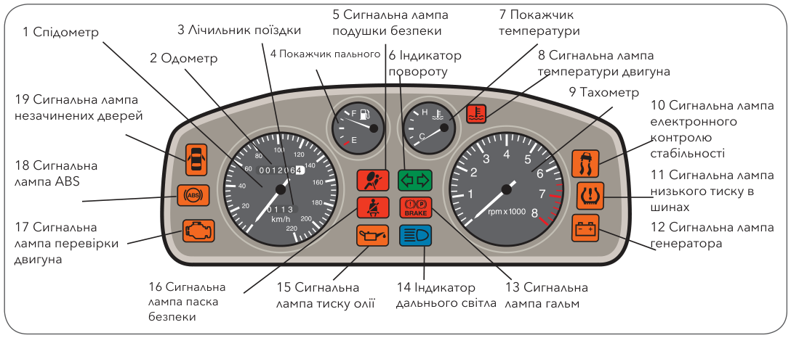
Панель приладів
| Номер | Індикатор/Покажчик | Функція |
|---|---|---|
| 1 | Спідометр | Показує швидкість, з якою рухається транспортний засіб. |
| 2 | Одометр | Показує відстань, яку транспортний засіб проїхав з моменту виготовлення. |
| 3 | Лічильник поїздки | Його можна обнулити на початку поїздки, щоб бачити, яку відстань ви проїхали. |
| 4 | Покажчик пального | Показує кількість пального в паливному баку. |
| 5 | Сигнальна лампа подушки безпеки | Показує, що транспортний засіб обладнано подушками безпеки. Якщо вона загорається під час руху, у системі подушок безпеки може бути несправність. Зверніться до механіка для перевірки. |
| 6 | Індикатор указівників повороту | Показує, чи ввімкнено указівник повороту. Коли ввімкнено аварійну сигналізацію, блимають обидва. |
| 7 | Покажчик температури | Показує температуру охолоджувальної рідини двигуна і чи двигун перегрівається. |
| 8 | Сигнальна лампа температури двигуна | Показує температуру охолоджувальної рідини двигуна і чи двигун перегрівається. |
| 9 | Тахометр | Показує частоту обертання двигуна в обертах за хвилину (об/хв). |
| 10 | Сигнальна лампа електронного контролю стабільності | Показує, що транспортний засіб обладнано системою електронного контролю стабільності. |
| 11 | Сигнальна лампа низького тиску в шинах | Загорається, якщо в одній або кількох шинах низький тиск повітря. |
| 12 | Сигнальна лампа генератора | Показує, чи заряджається акумулятор. |
| 13 | Сигнальна лампа гальм | Нагадує відпустити стоянкове гальмо перед початком руху. Якщо лампа загорається під час користування ножним гальмом, гальмівна система працює неправильно. Зверніться до механіка для перевірки. |
| 14 | Індикатор дальнього світла | Зазвичай синій індикатор, який показує, що ввімкнено дальнє світло фар. |
| 15 | Сигнальна лампа тиску олії | Показує тиск олії в двигуні. Вона не показує, скільки олії в двигуні. |
| 16 | Сигнальна лампа паска безпеки | Нагадує пристебнути пасок безпеки. |
| 17 | Сигнальна лампа перевірки двигуна | Показує можливу несправність двигуна. Зверніться до механіка для перевірки. |
| 18 | Сигнальна лампа антиблокувальної системи гальм | Показує, що транспортний засіб обладнано антиблокувальними гальмами. Якщо лампа не гасне після запуску автомобіля, у цій системі може бути несправність. Зверніться до механіка для перевірки. |
| 19 | Сигнальна лампа незачинених дверей | Показує, що двері зачинені не повністю. |
Перевірка перед поїздкою
Навіть якщо ви спішите, завжди перевіряйте транспортний засіб, щоб переконатися, що ним безпечно керувати. Перевірка перед поїздкою займає мало часу і скоро стане звичкою. Вона допоможе запобігти поломці транспортного засобу.
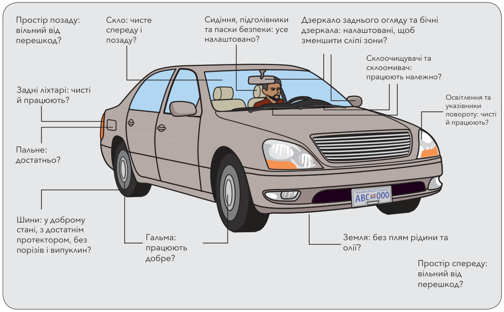
Використовуйте цю ілюстрацію як орієнтир, коли робите перевірку перед поїздкою.
Періодична перевірка
Перевірка перед поїздкою допоможе вам бути впевненими, що ваш транспортний засіб безпечний, коли ви вирушаєте до місця призначення. Проте, щоб забезпечити добре технічне обслуговування, кожні кілька тижнів потрібно робити ретельнішу перевірку. Як часто ви робите періодичну перевірку, залежить від того, скільки ви їздите.
Контрольний список
Скористайтеся наведеним контрольним списком, щоб тримати транспортний засіб у доброму робочому стані:
Чи моторна олія на потрібному рівні? Чи вона чиста?
Чи долито охолоджувальну рідину радіатора?
Чи достатньо рідини склоомивача?
Чи в порядку рівень гальмівної рідини?
Чи в порядку рівень рідини гідропідсилювача рульового керування? Чи в порядку рівні інших рідин?
❏
Чи належно налаштоване стоянкове гальмо?
Чи не тріснуті та чи не протікають шланги двигуна?
Чи в доброму стані ремені двигуна?
Чи всі фари й ліхтарі працюють? (Не забудьте перевірити також стоп-сигнали та ліхтарі заднього ходу.)
❏
Чи в доброму стані склоочищувачі?
Чи достатньо у вас пального?
Чи належно накачані шини?
Чи в доброму стані шини?
Поради щодо шин
Шини — ключові елементи безпеки, тому не забувайте:
- Тримайте шини накачаними до рекомендованого рівня тиску.
- Перевіряйте, чи не надто зношений протектор.
- Заміняйте шини, на яких є горби, випуклини, порізи, тріщини або оголений корд.
- Використовуйте лише шини, придатні для вашого транспортного засобу.
- Усі чотири шини мають бути подібні, щоб працювати разом.
- Тримайте запасне колесо під потрібним тиском повітря. На компактному запасному колесі правильний тиск повітря позначено на боковині. Коли ви користуєтеся таким запасним колесом, ніколи не їдьте швидше за 80 км/год.
- Регулярно переставляйте шини для рівномірного зношення.
- Уникайте різких розгонів і зупинок — вони скорочують строк служби шин.
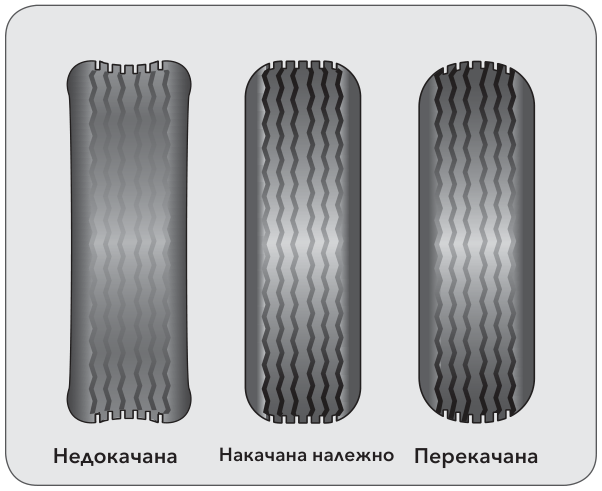
Підготуйтеся до зимового водіння
У Британській Колумбії ми повинні переконатися, що наші транспортні засоби готові до умов зимового водіння:
- Переконайтеся, що акумулятор автомобіля у доброму стані.
- Перевірте систему випуску відпрацьованих газів. Будь-які протікання надзвичайно небезпечні, бо монооксид вуглецю може накопичуватися в салоні, коли вікна та вентиляційні отвори закриті.
- Замініть моторну олію та інші рідини на зимові продукти.
- Установіть чотири зимові шини. Це покращить керованість і контроль над транспортним засобом на слизькій дорозі.
Використовувати ланцюги протиковзання на слизькій від льоду дорозі — гарна ідея. Переконайтеся, що ви вмієте встановлювати ланцюги на шини: потренуйтеся надівати їх на транспортний засіб, перш ніж вони знадобляться.
У надзвичайно поганих умовах може бути безпечніше припаркувати транспортний засіб, ніж продовжувати рух.
Водіння та довкілля
Легкові й вантажні автомобілі споживають понад половину світового річного запасу нафти. Ми знаємо, що запаси нафти обмежені. Автомобілі та легкі вантажівки викидають майже дві третини поширених забруднювачів повітря в долині Лоуер-Фрейзер (Greater Vancouver Regional District, 1998 Emissions Inventory).
Більшість транспортних засобів із кондиціонером, вироблених до 1995 року, також містять хлорфторвуглероди (CFC), які є основною причиною руйнування озонового шару атмосфери Землі.
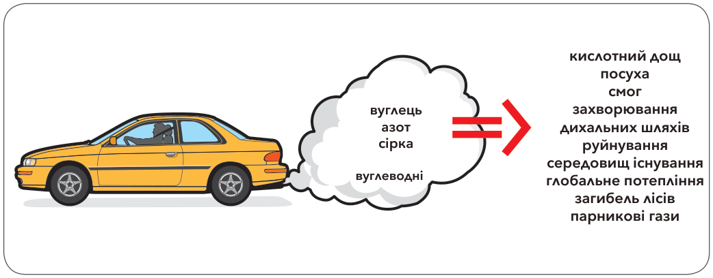
Один із кожних двох канадців має автомобіль або легку вантажівку та проїжджає близько 19 800 кілометрів на рік, за статистикою Environment Canada. Вихлопні викиди легкових і вантажних автомобілів — одна з головних причин зміни клімату, міського смогу та кислотних дощів. У середньому кожен транспортний засіб викидає понад чотири метричні тонни забруднювачів повітря на рік.
Ось що ви можете зробити, щоб допомогти захистити довкілля — ви ще й зекономите гроші:
Використовуйте інші види транспорту
- Коли можливо — пішки, велосипедом або громадським транспортом.
- Організуйте спільні поїздки. Замість везти дітей до школи, ідіть із ними пішки, їдьте велосипедом або запишіть їх до пішохідного шкільного автобуса.
Зменшуйте споживання пального
Безпечне водіння зменшує споживання пального й економить гроші:
- Керуйте плавно — уникайте різких рушань і зупинок, рухайтеся з рівномірною швидкістю.
- Зменште швидкість і зекономте — тримайтеся встановлених обмежень швидкості або нижче.
- Плануйте маршрут — об’єднуйте кілька справ в одну поїздку і плануйте маршрут так, щоб спершу дістатися найдальшого місця призначення: це дасть транспортному засобу прогрітися до нормальної робочої температури, що допомагає зменшити споживання пального.
- Не тримайте двигун на холостому ходу — вимикайте двигун, якщо зупинилися більш ніж на 60 секунд, наприклад на узбіччі дороги.
- Перевіряйте тиск у шинах щонайменше щомісяця — недокачані шини збільшують споживання пального.
- Уникайте зайвої ваги — приберіть з автомобіля все, що вам не потрібне, наприклад речі в багажнику.
- Опустіть вікна — не користуйтеся кондиціонером на швидкості до 50 км/год. На шосе користуйтеся проточною вентиляцією транспортного засобу, а не кондиціонером.
- Знімайте багажники на дах і дахові бокси, щоб зменшити опір повітря.
Зменшуйте викиди
Вибирайте транспортний засіб з економною витратою пального.
- Тримайте транспортний засіб налаштованим, щоб зменшити викиди.
- Регулярно змінюйте моторну олію та використовуйте правильний клас. Усувайте будь-які протікання олії.
- Тримайте повітряний фільтр чистим.
- Переконайтеся, що система кондиціонування не має протікань.
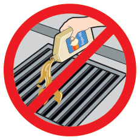